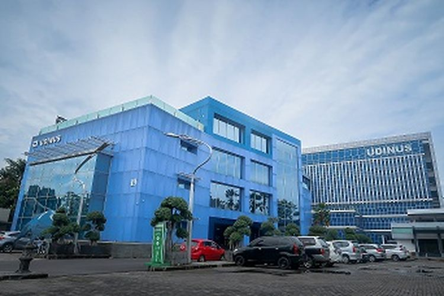

Dinus Student Blog
Beranda |
Profil |
Artikel |
Buku Tamu
Selamat Datang di Dian Nuswantoro Blog

Dinus Student Blog merupakan website yang diperuntukkan untuk mahasiswa di kampus Universitas Dian Nuswantoro. Setiap Mahasiswa yang ingin menggunakan blog mahasiswa diharuskan memiliki email @mhs.dinus.ac.id.Blog merupakan media bagi mahasiswa untuk dapat berbagi ilmu, berita, maupun informasi lainnya kepada warganet.Jika masih ada pertanyaan dan kendala tentang dinus student blog selahkan menghubungi pusat sistem informasi(PSI) Udinus.
Ke Atas